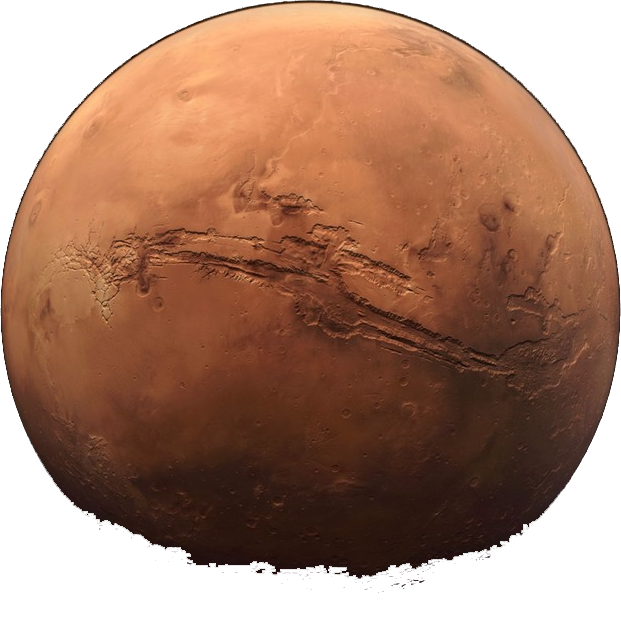

NUESTRA NUEVA SOCIEDAD
ROBEARTH

Hay que colonizar marte y formar una nueva civilización y mundo. Hacer este mundo justo y equitativo, en el cual evitar en lo más posible los conflictos, pobrezas éticas incorrectas y poco morales, faltas de respeto y acciones incorrectas. En este articulo te presentamos leyes tanto sociales, como educacionales y económicas. Tomando como eje principal el cuidado del medio ambiente, los recursos del planeta y la salud mental de los habitantes.
Como parte del medioambiente, nuestra visión siempre será dirigida a cuidar esta misma, y hacer de esta una parte fundamental de la supervivencia del ser humano al interior de este planeta
Como primeras medidas, aplicaremos un uso de energías autosustentables como lo es la energia solar, con paneles solares. Además de la energía eólica o hidráulica.
Reducción de combustibles fosiles para minimizar la producción de futura contamincación al interior del planeta.
Como primeras medidas, aplicaremos un uso de energías autosustentables como lo es la energia solar, con paneles solares. Además de la energía eólica o hidráulica.
Reducción de combustibles fosiles para minimizar la producción de futura contamincación al interior del planeta.